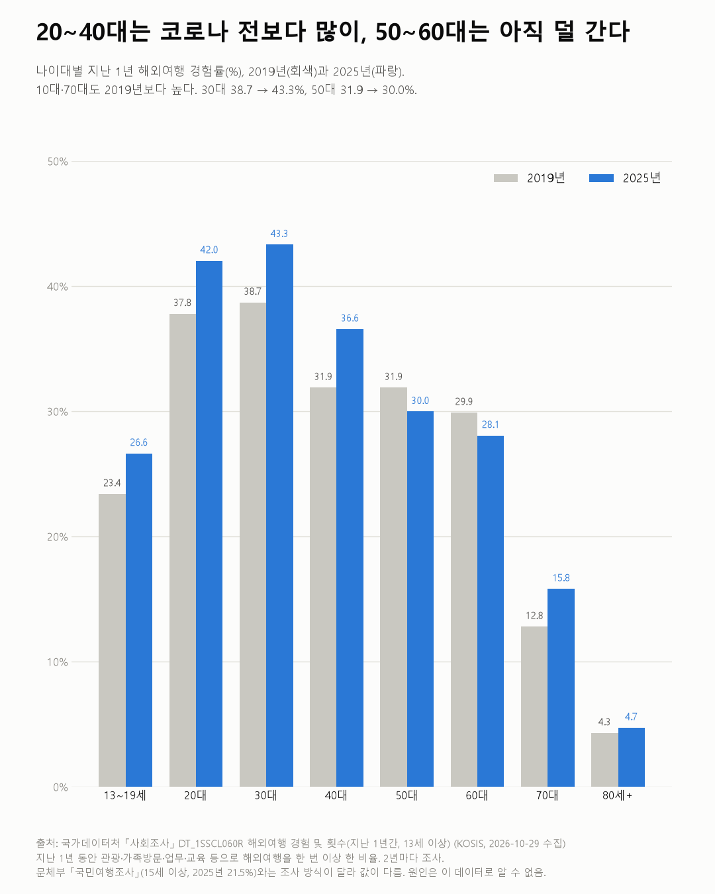

해외여행 간 사람, 2021년 1.1% → 2025년 31.5%
사회조사 2011~2025

질문
지난 1년 동안 해외여행을 다녀온 사람의 비율은 2011년부터 2025년까지 어떻게 바뀌었나? 코로나 이후 회복은 나이대마다 다른가? 국내 관광여행과 비교하면?
사용 데이터와 출처
| 데이터 | 출처 | 쓰임 |
|---|---|---|
| 해외여행 경험 및 횟수(지난 1년간, 13세 이상) (KOSIS DT_1SSCL060R) | 국가데이터처 「사회조사」 | 해외여행 경험률, 관광 여행자 1인당 횟수, 성별·나이대별, 2011~2025년 |
| 국내 관광여행 횟수(지난 1년간, 13세 이상) (KOSIS DT_1SSCL050R) | 같은 조사 | 국내 관광여행 경험률(비교용) |
- 해외여행 경험률 = 지난 1년 동안 관광·가족방문·업무·교육 등으로 해외여행을 한 번 이상 한 13세 이상 비율.
- 2년마다 조사한다. 2009년은 15세 이상이라 2011년부터 썼다.
- 검증: 모든 칸에서 '한 적 있음 + 없음 = 100%'인지 확인했다. 신뢰도 낮음(*) 표시가 붙은 칸은 없었다.
- 교차 확인: 2025년 31.5%, 2023년 15.1%, 2021년 1.1%, 2019년 30.4%는 보도 수치와 같다.
- 수집일: 2026-10-29 (KOSIS 오픈API).
인사이트
1. 지난 1년 동안 해외여행을 한 13세 이상은 2025년 31.5%다. 2019년 30.4%보다 높다. 2021년에는 1.1%였다.
2. 30대(43.3%)와 20대(42.0%)가 가장 많이 간다. 2019년(38.7%, 37.8%)보다 4%p 넘게 높다. 40대(31.9% → 36.6%), 13~19세(23.4% → 26.6%), 70대(12.8% → 15.8%)도 2019년보다 높다.
3. 50대와 60대는 아직 2019년보다 낮다. 50대 31.9% → 30.0%, 60대 29.9% → 28.1%다.
4. 국내 관광여행은 2025년 70.2%로 2019년(69.2%)과 비슷하다. 2021년에는 39.8%였다.
5. 관광 목적 해외여행자는 1년에 평균 1.7회 갔다(2025년). 2011년 1.4회에서 조금씩 늘었다.

한계
이 데이터로 말할 수 없는 것
- 다른 조사와 값이 다르다. 문화체육관광부 「국민여행조사」는 2025년 해외여행 경험률을 21.5%(15세 이상)로 발표했다. 조사 대상·방식·기간이 달라 생긴 차이로 보이며, 이 글은 사회조사 값만 쓴다. 숫자를 다른 조사와 섞어 쓰면 안 된다.
- '지난 1년'이 조사 시점에 따라 다르다. 2021·2023년 값에는 코로나 기간이 섞여 있다.
- 목적을 나누지 않았다. 관광 외에 업무·교육·가족 방문도 포함된 경험률이다.
- 원인은 말하지 않는다. 환율, 항공편, 소득 등 이유는 이 데이터로 알 수 없다. 여행을 권하는 글도 아니다.
전제 기록
데이터를 보기 전에 적어둔 것, 그리고 보고 나서 바꾼 것
- 전제 기록(premises)(데이터를 받기 전에 작성)를 따랐다.
- 받은 뒤 바뀐 점: 보도 대조 중 다른 조사(국민여행조사)의 값이 크게 달라, 그 차이를 한계 첫 줄과 차트 각주에 적었다.